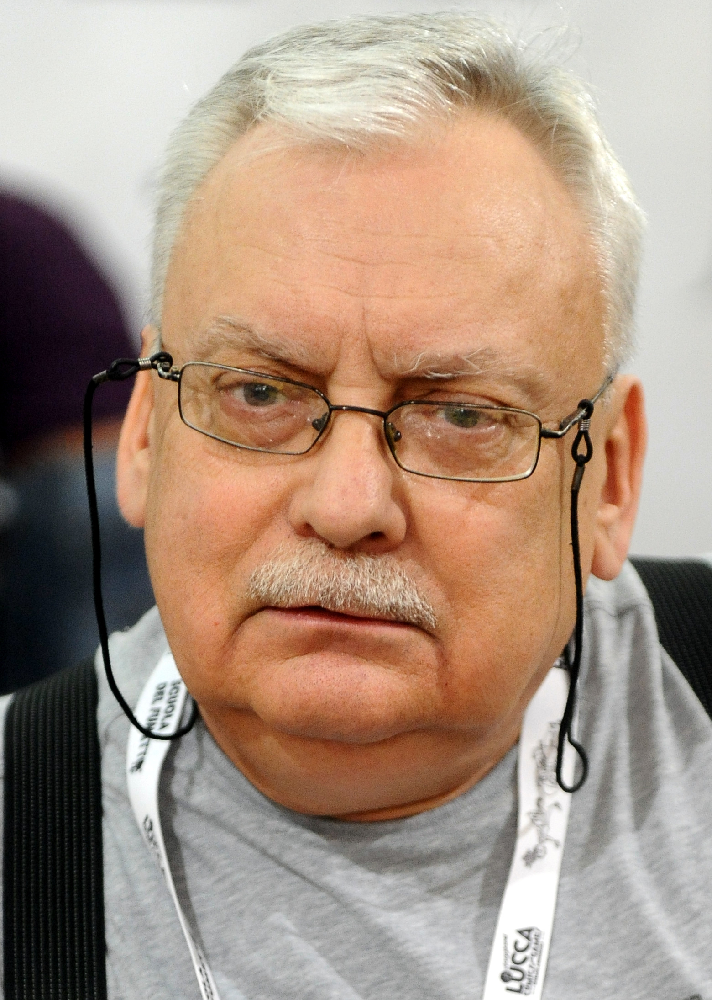

Zaklínač je fantasy cyklus polského spisovatele Andrzeje Sapkowského. Vznikl jako série krátkých příběhů publikovaných v polském sci-fi a fantasy časopise Fantastyka, kam byla první povídka s názvem Wiedźmin (česky Zaklínač) napsána v roce 1986 jako příspěvek do soutěže a získala třetí místo. V roce 1993 byl vydán první díl pokračování Krev elfů ve formě románu. Zatím poslední díl s názvem Bouřková sezóna vyšel v polštině na konci roku 2013 a navazuje na celou předchozí sérii jako prequel. V ČR byla tato kniha vydána ke konci roku 2014 a okamžitě se stala jedním z nejprodávanějších titulů za měsíc listopad.Hlavním hrdinou próz je Geralt z Rivie, který je povoláním zaklínač, tedy nájemný lovec nestvůr. V ději se mihnou i vedlejší postavy několika dalších zaklínačů. Sapkowski zobrazil zaklínače jako mutanty, kteří byli proměněni pomocí magie, mutagenů a jedů. Získali tak magické schopnosti a dalším výcvikem si osvojili též pokročilé bojové techniky. Své nadlidské schopnosti využívají především k boji s různými obludami a magickými tvory, kteří sužují lidstvo. Druhou hlavní postavou série je princezna Cirilla, která se sice nepodrobí mutacím, ale podstoupí zaklínačský výcvik.
Andrzej Sapkowski
Andrzej Sapkowski (* 21. června 1948, Lodž) je polský spisovatel, který je považován za jednoho z nejlepších autorů fantasy. Je velice populární nejen v Polsku, ale také v České republice, Slovensku, Rusku, Německu, v Portugalsku, Francii, Švýcarsku a obrovskou popularitu si vydobyl ve Španělsku. Jeho nejznámějším dílem jsou povídky a navazující sága o zaklínači Geraltovi z Rivie a princezně Ciri. Tato část jeho díla byla i zfilmována a byly vytvořeny hry. Andrzej Sapkowski se narodil v Lodži a jelikož má nadání na jazyky, tak po studiu vysoké školy pracoval v oblasti zahraničního obchodu. Svou první povídku publikoval v roce 1986 a již o dva roky později byl jedním z nejoblíbenějších spisovatelů fantasy v Polsku. Kromě knih píše i povídky, recenze, komentáře a fejetony, zejména pak do polských fantasy časopisů Fantastika a Magie a Meč (v orig. Fantastyka a Magia i miecz) Mezi jeho novější díla patří „sága o Reinmarovi z Bělavy“, známější pod názvem Husitská trilogie, je to historická fantasy, která se odehrává v období husitských válek, především ve Slezsku a Čechách. Pro svůj košatý jazyk s množstvím latinských citátů a mistrovskou gradaci děje bývá přirovnávána ke Křižákům Henryka Sienkiewicze. Sapkowski zde projevuje skvělou znalost historických reálií (čerpal zejména z Polské kroniky Jana Dlugosze), v příběhu vystupuje mnoho historických osobností z tehdejšího Slezska, Uher a Polska. Podobně jako v jiných románech zde Sapkowski uplatňuje svou pověstnou ironii a skvělý smysl pro detail.
